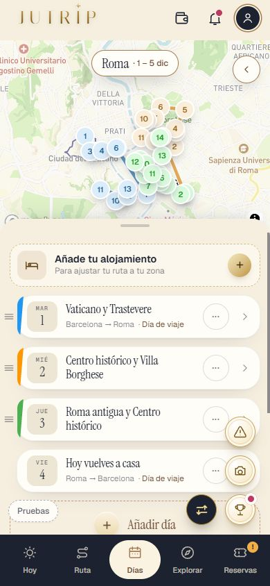
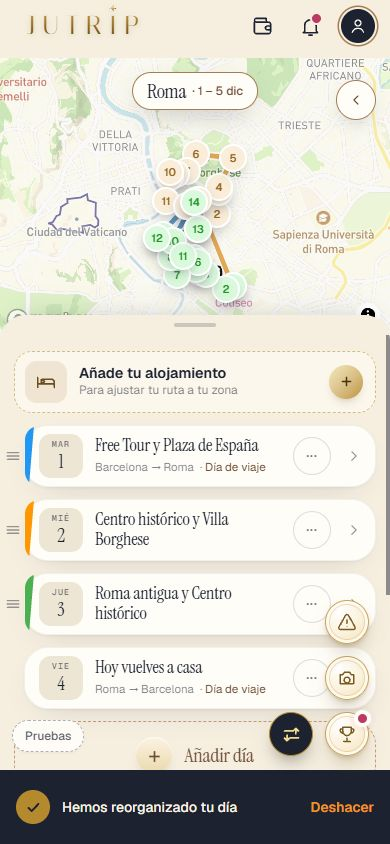
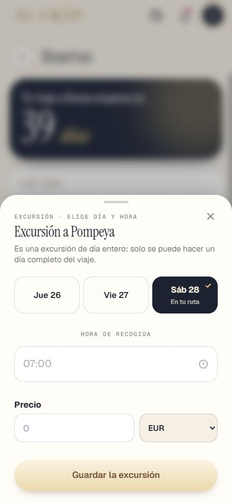
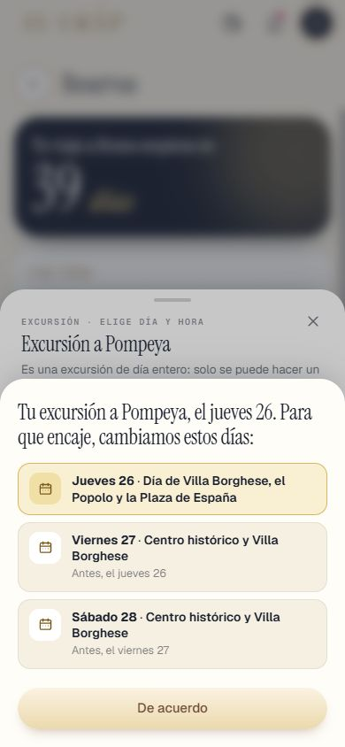
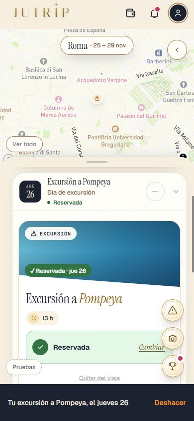

Capturas en modo iPhone. Sin pruebas (tanda de pruebas esta noche): solo npm run build y estas capturas. Detalle en docs/dias/DECISIONES_V49.md.
Reproducido: con el Free Tour por la tarde, el motor dejaba el día en el tour, el Panteón y la noche (3 paradas). Ahora, detrás del tour, se añaden los sitios del centro y queda en 7 (con la comida antes del tour y la cena). [Reorganizar] se va a la primera y solo vuelve si el viajero cambia algo.





«Estación de Termini» (y cualquier punto del archivo de datos) ya no se enseña: solo el que traiga la API de Civitatis o el que escriba el viajero. Fuera [Cómo llegar al punto de encuentro]. La hora gris de ejemplo (07:00) ya no se guarda: el ✓ de la rueda no guarda un ejemplo sin tocar, y la hora de recogida de una excursión es opcional (sin ella, la tarjeta no la enseña).
Ninguna prueba. No he visto en pantalla el aviso E1 de una entrada (mismo componente) ni el [Deshacer] de las entradas (no añadido). No he revisado ficha a ficha todas las excursiones de Roma y Lanzarote.